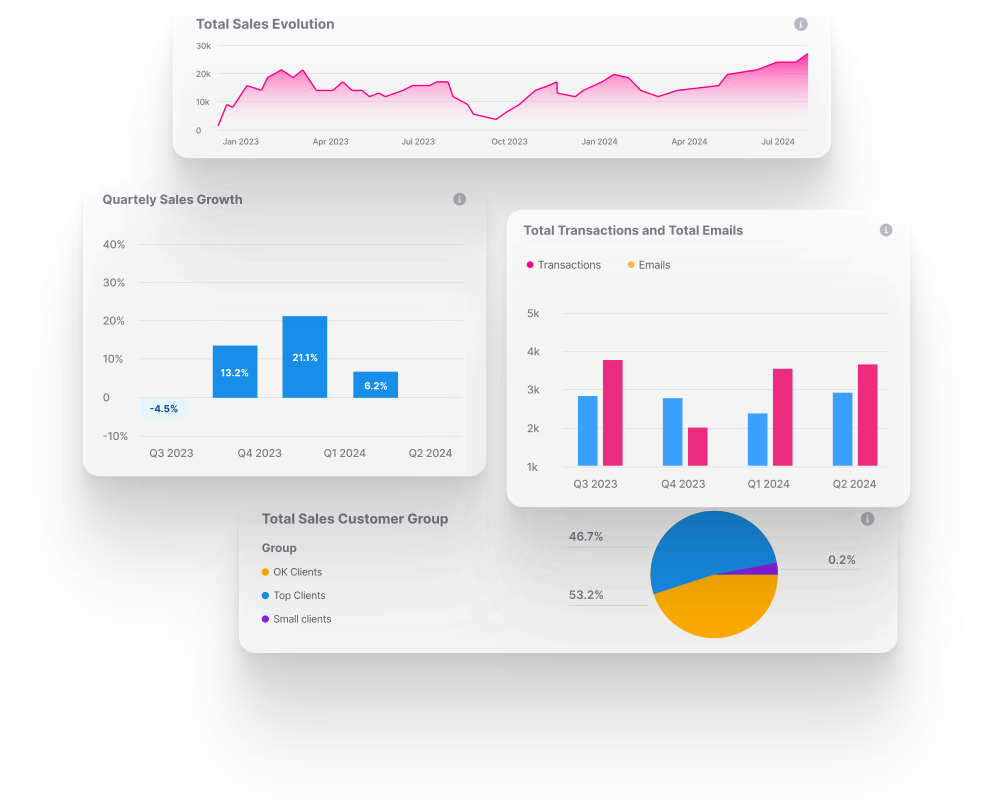
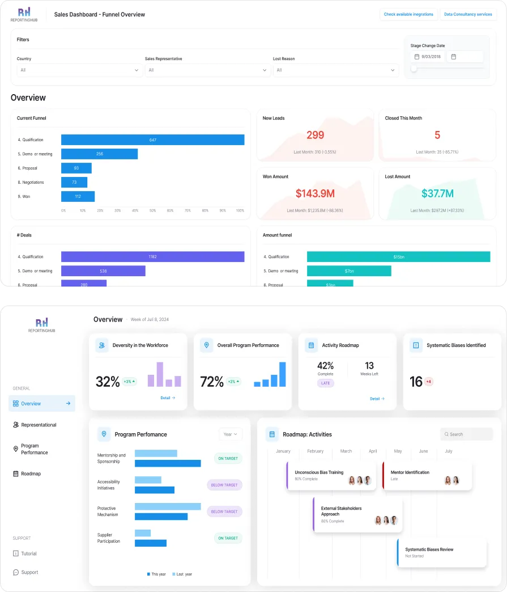

Power BI Apps: Everything You Need to Know
The data connectivity and visualization platform is a top choice for businesses in need of robust tools they can use to build analyses based on complex datasets.
Central to this ecosystem are Power BI Apps, curated collections of dashboards and reports designed to streamline insights distribution within organizations.

Introduction to Power BI
The term "Power BI Apps" can be confusing for some, because Microsoft uses "app" in multiple ways within Power BI. Generally, "Power BI Apps" are packages that bundle multiple dashboards and reports in Power BI into a single app for easy access, navigation, and sharing, which is different than data connectors and integrations.
Data Connectors/Integrations:
Power BI Apps:

Why Use Power BI Apps?
Power BI Apps provide valuable benefits for organizations looking to simplify data sharing and improve business intelligence. They ensure all users have access to the same up-to-date information, without needing to manually check for updates. When new content is released, users are automatically notified or see the changes immediately. One key advantage is the separation between developer and user environments. Developers work in the workspace, while users interact with the finished content in the app. Power BI Apps are designed for end-users, providing easy access to curated content from specific App Workspaces. Fabric Workspace Admins control the content within these apps, which can include Power BI reports, dashboards, Excel workbooks, and Paginated Reports.


Benefits of Power BI Apps
Drawbacks of Power BI Apps
How Easy Is Power BI to Learn?
When analyzing Power BI's shortcomings, a number of reasons become apparent:
How to Navigate the Power BI App Development Lifecycle
Interaction with Published Apps:
Power BI Desktop App vs. Web App: Key Differences
Best Practices for Building Power BI Apps
- Tailor content and layout to meet the needs of end users.
- Create different views for different user groups to ensure relevance.
- Ensure data is accurate, clean, and up-to-date.
- Regularly refresh datasets and perform data validation checks.
- Design with performance in mind, avoiding complex calculations in visuals.
- Use aggregations and measures to reduce processing time.
- Align the app's appearance with your organization's branding.
- Use consistent colors, logos, and fonts for a professional look.
- Include descriptions and tooltips to help users understand the purpose and content of reports.
- Contextual information aids data interpretation and decision-making.
- Utilize Power BI’s security features to control access to sensitive information.
- Implement role-based access controls and ensure compliance with data privacy regulations.
- Encourage feedback and collaboration among users
- Use comments and sharing features to facilitate discussions and insights.